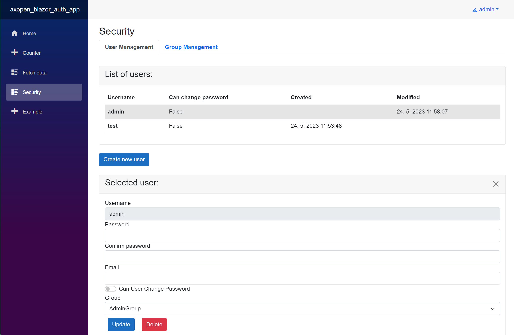
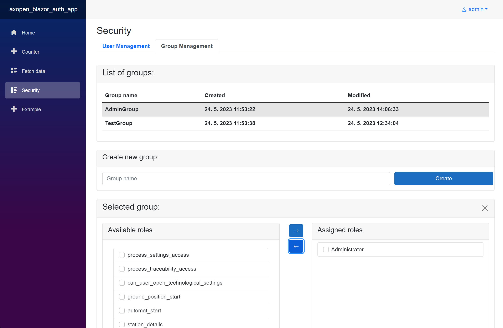
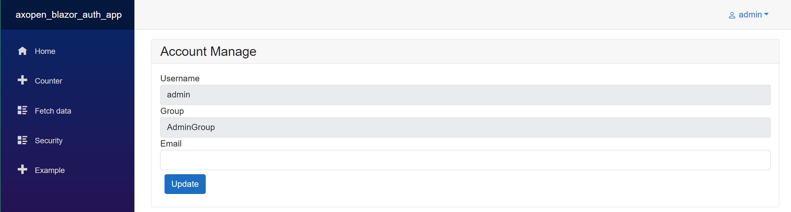
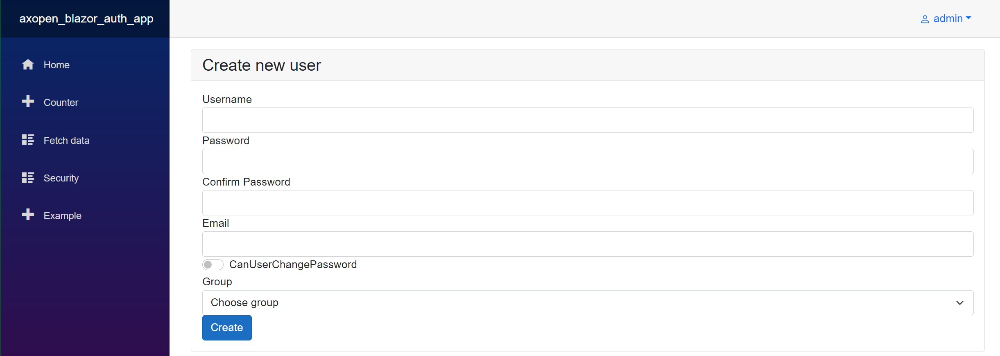

AXOpen.Security
AxOpen.Security is library which provides authentication and authorization in Blazor AX applications. It is based on a default solution for authentication in Blazor, which is extended by using implemented repositories within Ax.Open.Data. As a result, multiple storage providers for security can be used.
Installation
The security library is available in form of NuGet package. Detailed installation instructions of security into empty Blazor project is located in security installation article.
Basic concepts
Each user is limited to having just a single group. A group is formed by a collection of multiple roles. When a user is assigned to a group, they possess all the roles associated with that group. It is possible for a single role to be assigned to multiple groups.
Security views
SecurityManagementView component serves for managing users. It is available only if user is logged in with administrator rights.
When user is logged in with administrator rights, it is possible to modify all available users and groups. Administrator can delete users or change group.
User management
The SecurityManagementView component includes a tab dedicated to user management. Within this tab, users can be updated or newly created. When a user is selected, a card is displayed showing the current data for that user, there is an option to update or delete user.

Group Management
The SecurityManagementView component includes a tab for group management. Within this tab, groups can be updated or newly created. When a group is selected, a card is displayed showing the assigned roles for that group. Users have the option assigned or unassign roles or delete group.

Account Management
In account management view is possible to change the your user data, like email address or password.

User Create
In user create view is possible to new user.

AuthorizeView and AuthenticationContext
There are two ways how to work with authentication and authorization.
- Use of the
AuthorizeViewcomponent in Blazor component - Use of the
AuthenticationStateProviderwithin a C# class
Use of AuthorizeView
The AuthorizeView is used to create a secure views within a Blazor application. It contains two child components Authorized and NotAuthorized, which serves for visualizing view in a corresponded views. In addition, the parameter Roles can be used to specified roles, based on which the authorized view is shown.
The AuthorizeView contain base class named context, which is used to access identity of currently logged in user.
The example of usage of AuthorizeView within a Blazor component is shown below:
<AuthorizeView Roles="Administrator">
<Authorized>
<h4>You have role Administrator.</h4>
<h4>Your name is: @context.User.Identity.Name</h4>
</Authorized>
<NotAuthorized>
<h4>You dont have role Administrator.</h4>
</NotAuthorized>
</AuthorizeView>
If the user is authenticated and is also authorized with the Administrator role, the authorized view is shown. Otherwise, non-authorized view is displayed.
Also, there is a possibility to call method from RoleGroupManager called GetRoles, which takes as parameter name of the group and returns corresponded roles. RoleGroupManager is accessible from IRepositoryService.
@inject IRepositoryService rs
<AuthorizeView Roles="@rs.RoleGroupManager.GetRoles("AdminGroup")">
Use of AuthenticationStateProvider
The AuthenticationStateProvider serves for accessing current logged in user and his claims. This provider can be injected to any C# class (either from constructor injection (in ViewModel) or with Inject attribute in Blazor component), where user need to work with authentication context. The authentication context of current user can be accessed in following way:
@page "/mypage"
@inject AuthenticationStateProvider _asp
@code
{
protected override async Task OnInitializedAsync()
{
var context = await _asp.GetAuthenticationStateAsync();
var isAuth = context.User.Identity.IsAuthenticated;
if (isAuth)
{
Console.Writeline("I'm authenticated");
}
}
}